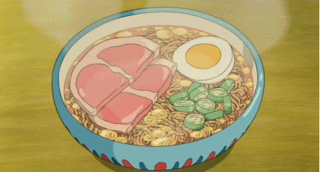

Ponyo Tasty Ramen

Description
The simplicity of the ramen and the scene in general really takes you back to simple homemade instant ramen so many of us ate growing up (and probably still eat, be honest).
Ingredients
- 1 package nissin chicken ramen
- 400ml boiling water
- 1 slice cooked ham (cut in half)
- 1/2 hard boiled egg
- chopped green onion
Instructions
- Boil the water.
- Place the noodles in a ramen bowl. Pour boiling water over the noodles and cover.
- Set and start your timer for three minutes.
- After the first minute, quickly open, shake the noodles to separate, then arrange the ham, egg, and green onion over the noodles.
- Cover again and wait until the timer beeps.
- Enjoy!
Home